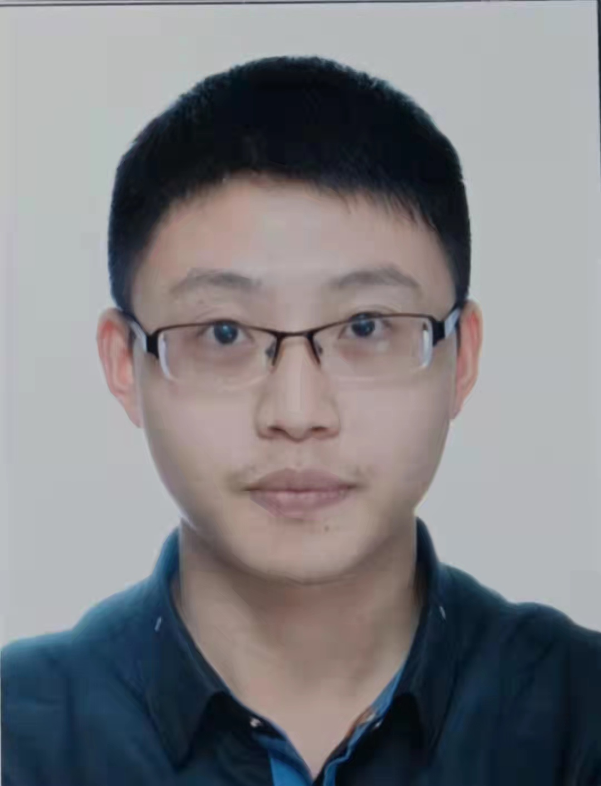

Tao Wang 王韬Ph.D. StudentInstitue of Data Science National University of Singapore Email: twangnh AT gmail DOT com
|
 |
Biography
I am a Third-year Ph.D. student at National University of Singapore, generously supported by the NGS graduate scholarship, with Institue of Data Science, advised by Dr. Feng Jiashi and Dr. Wang Xinchao.
I obtained my bachelor degree from Yingcai Honors College (elite school, candidates selected from top 5% undergraduates), University of Electronic Science and Technology of China (UESTC).
My research interest is on computer vison and machine learning, with specific focus on data-efficient and model-efficient Object Instance Detection, Segmentation and Human Pose Estimation.Updates:
- One papers accepted by NeurIPS'21.
- Invited to serve as a reviewer of IJCV.
- Two papers accepted by ICCV'21.
- One paper accepted by ECCV'20.
- We win the Track4 of Human in Events challenge.
- One paper accepted by CVPR'20.
- We win the LVIS challenge.
- Two papers accepted by CVPR'19
Publications
- Direct Multi-view Multi-person 3D Human Pose Estimation Tao Wang, Jianfeng Zhang, Yujun Cai, Shuicheng Yan, Jiashi Feng Conference on Neural Information Processing Systems (NeurIPS), 2021 acceptance rate 26% [Paper][video][slides]
- SODAR: Segmenting Objects by Dynamically Aggregating Local Mask Representations Tao Wang, Jun Hao Liew, Jiashi Feng IEEE Transactions on Image Processing (TIP, under review), 2021 [Paper][code]
- PnP-DETR: Towards Efficient Visual Analysis with Transformers Tao Wang, Li Yuan, Yunpeng Chen, Jiashi Feng, Shuicheng Yan International Conference on Computer Vision (ICCV), 2021 acceptance rate 24% [Paper][code]
- Tokens-to-Token ViT: Training Vision Transformers from Scratch on ImageNet Li Yuan*, Yunpeng Chen, Tao Wang*, Weihao Yu, Yujun Shi, Zihang Jiang, Francis EH Tay, Jiashi Feng, Shuicheng Yan Conference on Computer Vision and Pattern Recognition (ICCV), 2021 acceptance rate 24% [Paper][code]
- Overcoming Classifier Imbalance for Long-tail Object Detection with Balanced Group Softmax Yu Li, Tao Wang, Bingyi Kang, Sheng Tang, Chunfeng Wang, Jintao Li, Jiashi Feng Conference on Computer Vision and Pattern Recognition (CVPR), 2020, Oral acceptance rate 26% [Paper][code] We proposed a specifically re-designed softmax classification module which further improves over SimCal.
- SimCal: The Devil is in Classification: A Simple Framework for Long-tail Object Detection and Instance Segmentation Tao Wang, Yu Li, Bingyi Kang, Junnan Li, Junhao Liew, Sheng Tang, Steven Hoi, Jiashi Feng International Joint Conference on Artificial Intelligence (ECCV), 2020 acceptance rate 27% [Paper][code] SimCal is a improved version over our LVIS challenge submission
- Central Similarity Quantization for Efficient Image and Video Retrieval scholar Li Yuan, Tao Wang, Xiaopeng Zhang, Francis EH Tay, Zequn Jie, Wei Liu, Jiashi Feng Conference on Computer Vision and Pattern Recognition (CVPR), 2020 acceptance rate 25% [arXiv][code]
- Revisiting Knowledge Distillation via Label Smoothing Regularization Li Yuan, Francis EH Tay, Guilin Li, Tao Wang, Jiashi Feng Conference on Computer Vision and Pattern Recognition (CVPR), 2020, Oral acceptance rate 25% [arXiv][code]
- Distilling Object Detectors with Fine-grained Feature Imitation Tao Wang, Li Yuan, Xiaopeng Zhang, Jiashi Feng Conference on Computer Vision and Pattern Recognition (CVPR), 2019 acceptance rate 26% [Paper][code]
- Few-shot Adaptive Faster R-CNN Tao Wang, Xiaopeng Zhang, Li Yuan, Jiashi Feng Conference on Computer Vision and Pattern Recognition (CVPR), 2019 acceptance rate 26% [Paper][code]
Honors and Awards
- Winner ([certificate]) of the first LVIS challenge @ ICCV COCO workshop 1st Author
- Winner of the ACM MM grand challenge of Human in Events Track4: Person-level Action Recognition in Videos of Crowded Scenes
- NUS NGS Ph.D. scholarship
- Excellent Graduate of Yingcai Honors College
{kind=link}
Academic Service
- Conference Reviewer: ICCV, ECCV, CVPR, NeurIPS, WACV
- Journal Reviewer: IJCV, TIP
Teaching Assistant
- EE5907: Pattern Recognition
- EE5934/EE6934: Deep Learning
- EE3801: Data Engineering Principles
| © Tao Wang | Last update: June 2021 |